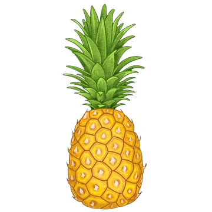

Aloha 
 My name is Olivia and I
love to travel to Hawai’i. Over the past couple years, my family and I have visited 3 islands in Hawaii;
O’ahu, Kaua’i and Maui. One of the things I like most about this island is the cuisine. In my opinion,
not only is the food delicious, but it allows visitors to get a taste for the beautiful culture. Out of
the three islands I have visited, I have personally enjoyed Kaua’i the most. They had delicious food that
I would like to share with you! If you are planning a visit, please look through this guide! .
My name is Olivia and I
love to travel to Hawai’i. Over the past couple years, my family and I have visited 3 islands in Hawaii;
O’ahu, Kaua’i and Maui. One of the things I like most about this island is the cuisine. In my opinion,
not only is the food delicious, but it allows visitors to get a taste for the beautiful culture. Out of
the three islands I have visited, I have personally enjoyed Kaua’i the most. They had delicious food that
I would like to share with you! If you are planning a visit, please look through this guide! .
 L&L BBQ serves some delicious traditional Hawaiin
foods. They are a franchise business and have several locations throughout Hawaii, as well as locations in
other areas of the United States. They are most famous for their “plate lunches” which consists of a bed of
rice, protein of choice and a side of the famous Hawaiin macaroni salad. My personal favorite dish here is
the Spam Saimin which is a noodle dish with one of Hawaii’s famous foods, Spam. The broth is beautifully
flavored and is definitely a comfort food for me. .
L&L BBQ serves some delicious traditional Hawaiin
foods. They are a franchise business and have several locations throughout Hawaii, as well as locations in
other areas of the United States. They are most famous for their “plate lunches” which consists of a bed of
rice, protein of choice and a side of the famous Hawaiin macaroni salad. My personal favorite dish here is
the Spam Saimin which is a noodle dish with one of Hawaii’s famous foods, Spam. The broth is beautifully
flavored and is definitely a comfort food for me. . The Kauai Poke Co. Is a family-owned business that
serves delicious, fresh poke bowls. Poke is a staple food in Hawaii and if you like raw fish, this destination
is a must. Kauai Poke Co. Does it best. Fish packed with flavor over a bed of rice served with a side of
coleslaw is simply heaven on a plate. They also serve various salads and sushi rolls that have delicious
fresh flavors. If you are looking for a sit-down option, they also have a restaurant location. Follow the
link to view the menu and location because you will not want to miss this destination!
The Kauai Poke Co. Is a family-owned business that
serves delicious, fresh poke bowls. Poke is a staple food in Hawaii and if you like raw fish, this destination
is a must. Kauai Poke Co. Does it best. Fish packed with flavor over a bed of rice served with a side of
coleslaw is simply heaven on a plate. They also serve various salads and sushi rolls that have delicious
fresh flavors. If you are looking for a sit-down option, they also have a restaurant location. Follow the
link to view the menu and location because you will not want to miss this destination! Jojo’s Shaved Ice is a traditional Hawaiin dessert
destination. What’s unique about Jojo’s is their handcrafted syrups that come in a variety of different
fruity flavors. Along with the fluffy and refreshing ice, you can add toppings such as a scoop of ice cream
or mochi. My personal favorite is the mango ice with a scoop of coconut ice cream. On a hot day in the
Hawaiin sun, Jojo’s is sure to cool you down with a delicious treat.
Jojo’s Shaved Ice is a traditional Hawaiin dessert
destination. What’s unique about Jojo’s is their handcrafted syrups that come in a variety of different
fruity flavors. Along with the fluffy and refreshing ice, you can add toppings such as a scoop of ice cream
or mochi. My personal favorite is the mango ice with a scoop of coconut ice cream. On a hot day in the
Hawaiin sun, Jojo’s is sure to cool you down with a delicious treat.